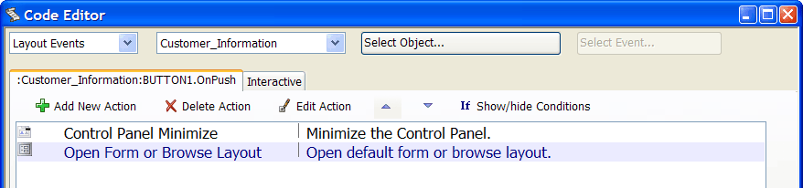

Overview - Action Scripting
Action Scripting is an easy, graphical, way to create scripts in Alpha Anywhere to automate your applications and customize their behavior so they work the way you want them to.
Action Scripts are shown in the Alpha Anywhere Code Editor as a list of Actions:

Action Scripting is a front end to Alpha Anywhere's Xbasic programming language. However, you don't need to know how to program, or know Xbasic, in order to create Action Scripts.
An Action Script can contain one or more steps, some of which are only executed if certain conditions are met.